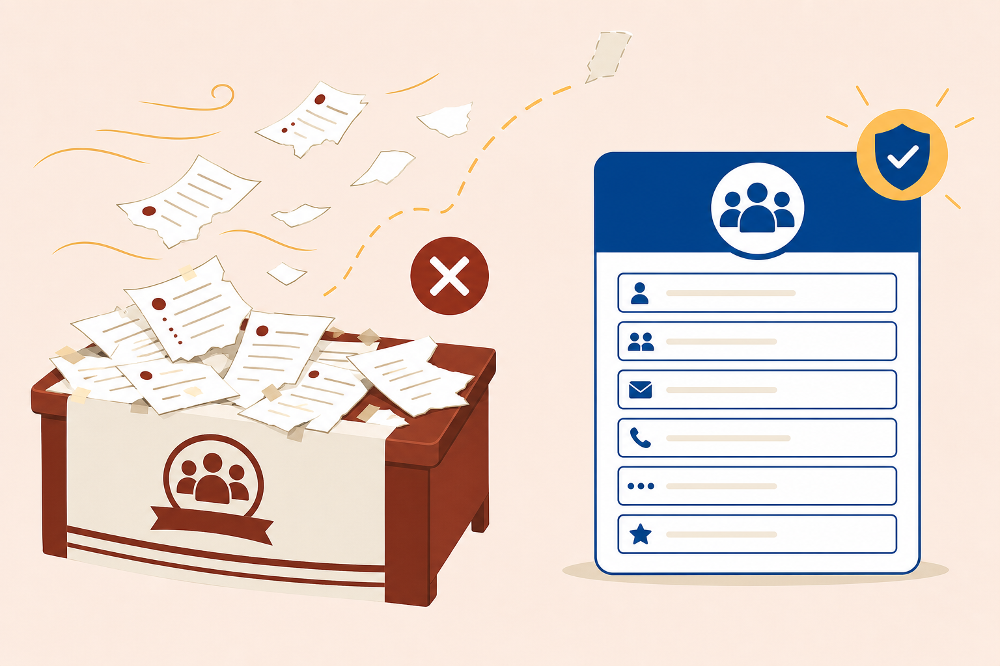
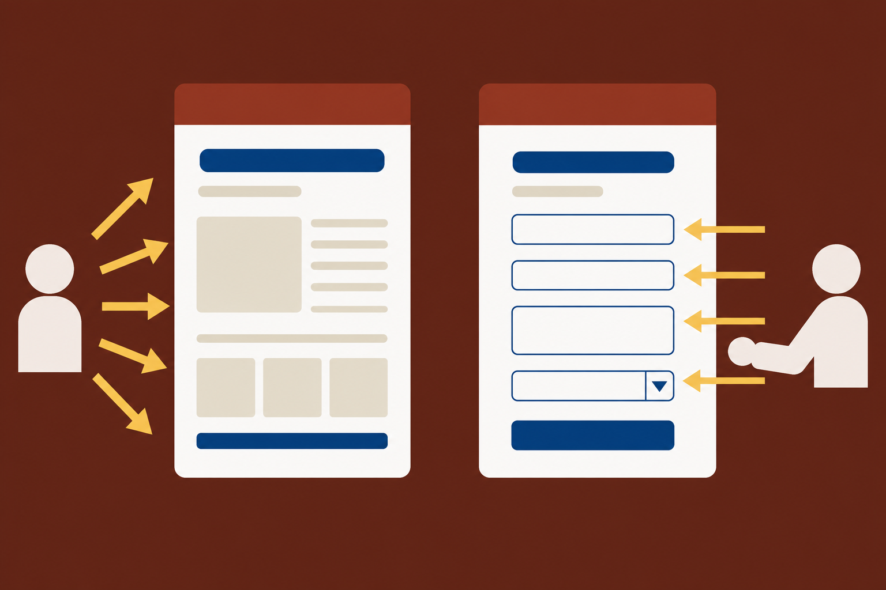
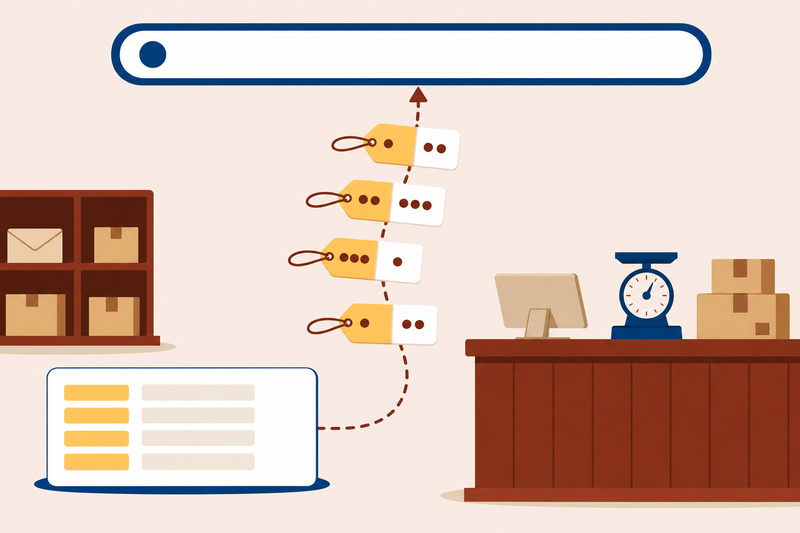
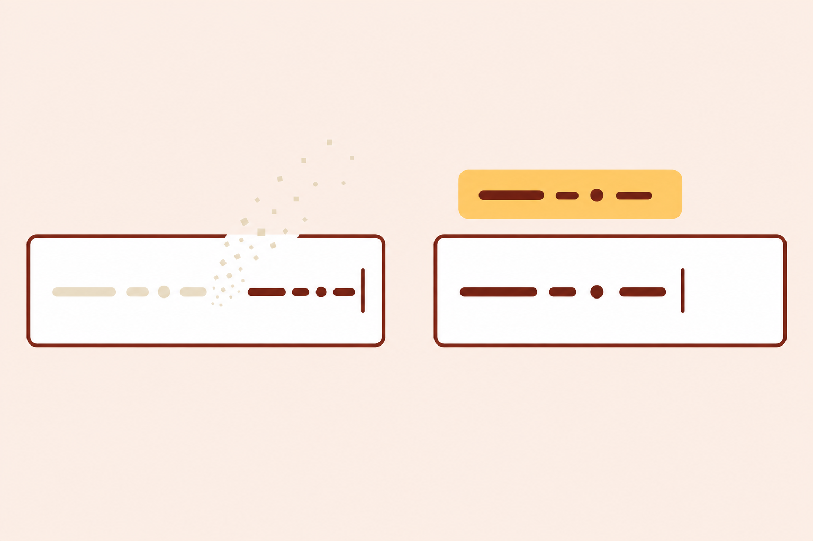

Construct
Inputs, choices, menus, and the label contract on every control.
Half the sign-up scraps were gone by the next meeting. The join page ends that.
Inputs, choices, menus, and the label contract on every control.
Name-value pairs, GET and the query string, POST, and the server's role.
The join page: accessible, styled, and collecting only what it needs.


<form> wraps the controls and owns their shared trip<input> is the workhorse · empty, like <img>type picks each control's personality<label for="student-name">Full name</label>
<input type="text" id="student-name"
name="student-name">
The target is the circle alone.
The words join the target, word-sized.
And the words ride the focus: Devon hears “Drop-in, radio button.” Zero pixels changed.
Call it: the page looks perfect on screen. What broke, and who pays?
type="text"one line of text
type="email"same box, plus a promise the browser records@
type="radio"one choice among a few · picking releases the rest
type="checkbox"any number of independent yes-or-no answers
<select>one choice among many, folded into a menuWednesday▾
<textarea>a paragraph or more · <button> starts the tripJoin
<input type="radio" id="type-drop-in"
name="session-type" value="drop-in">
<label for="type-drop-in">Drop-in</label>
<input type="radio" id="type-appointment"
name="session-type" value="appointment">
<label for="type-appointment">Appointment</label>Rename one and the group splits: both circles select, and picking releases nothing.
<fieldset>
<legend>Which days can you meet?</legend>
<p>
<input type="checkbox" id="day-monday"
name="meeting-day" value="monday">
<label for="day-monday">Monday</label>
</p>
</fieldset>Devon hears "Which days can you meet? Monday", never a bare "Monday".

The form also holds: a subject menu (Algebra listed first), a checkbox group, and a notes box. Which pairs travel?
notes= empty, and subject=algebra, because a select always has a selected option · only the untouched checkbox group stays home?student-name=Jordan+Ortiz&student-email=jordan%40example.org
&subject=algebra&session-type=drop-in¬es=<!-- The optional menu's repair: skipped sends empty, not false. -->
<option value="">Choose one</option>Encoded for travel: the space rides as + and the @ as %40. Decoded on arrival.
GETpairs ride the URL · safe to repeat, bookmark, share · a search, a filter, a lookup
POSTpairs ride inside the request · private or state-changing · a signup, a password, an order
Either way, Chapter 1's law holds: never collect anything over plain http://.
action names the receiver · omitted for now<label for="student-email">Email (required)</label>
<input type="email" id="student-email"
name="student-email" required autocomplete="email">The browser checks the claim's shape. It can never check ownership. That job waits for a server.

label { display: block; margin: 16px 0 4px; }
input, select, textarea {
width: 100%;
padding: 8px;
font-size: 1rem; /* controls ignore the body until told */
}
input:focus, select:focus, textarea:focus {
outline: 2px solid #268080; /* 3.04:1, measured */
}Fix it: amend the rule so the brand improves and the law holds. Who does your amendment protect?
outline: 2px solid #268080; restyles the signal in the palette · it protects the keyboard visitor, who steers by that ringEvery control on the contract, the promise on the page.
required, autocomplete, and the placeholder law held.
Column, ring, and button from the passing list.
Read the trip, audit the page, refuse a field.
Estimated time: 4-5 hours · Submit skills-lab-11a-lastname.zip · Closes the plan's second promise
for meets id, and two audiences win.
Radios, boxes, menus: the data decides.
Pairs, encoding, and who stays home.
Collect only what the page needs.
Exit ticket: a control has a label but no name attribute. What does Devon hear, and what does the server receive?
Next: scripting, hosting, the pre-flight, and the site ships.